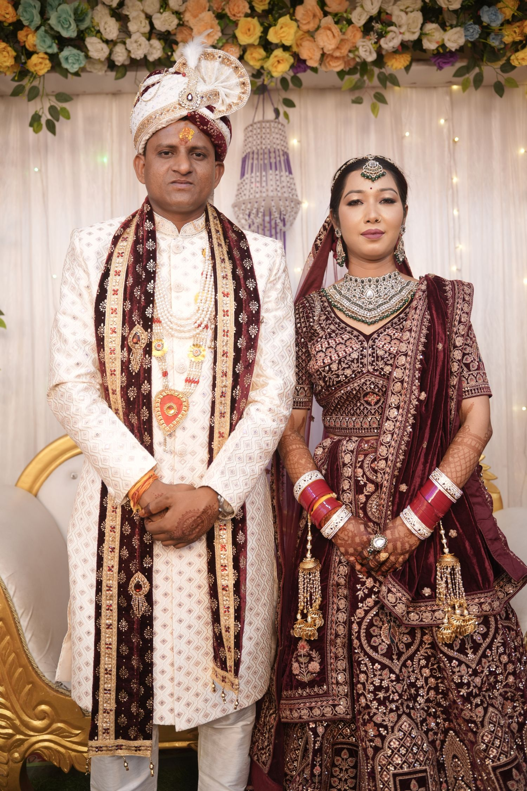
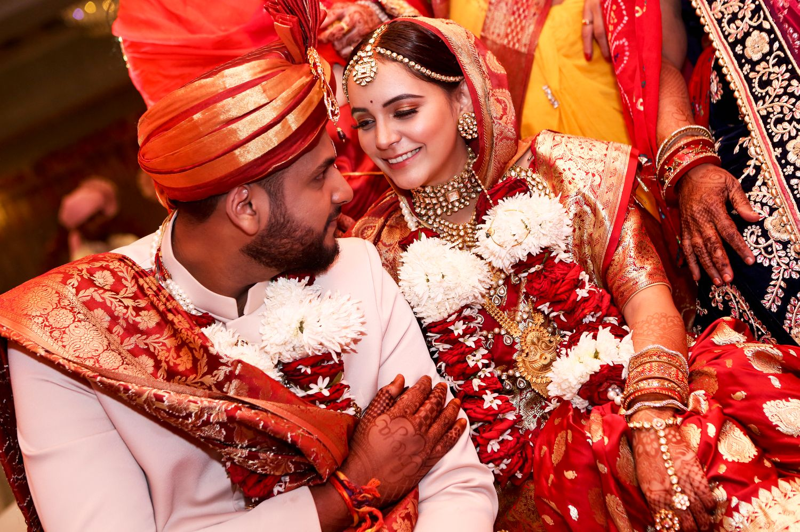
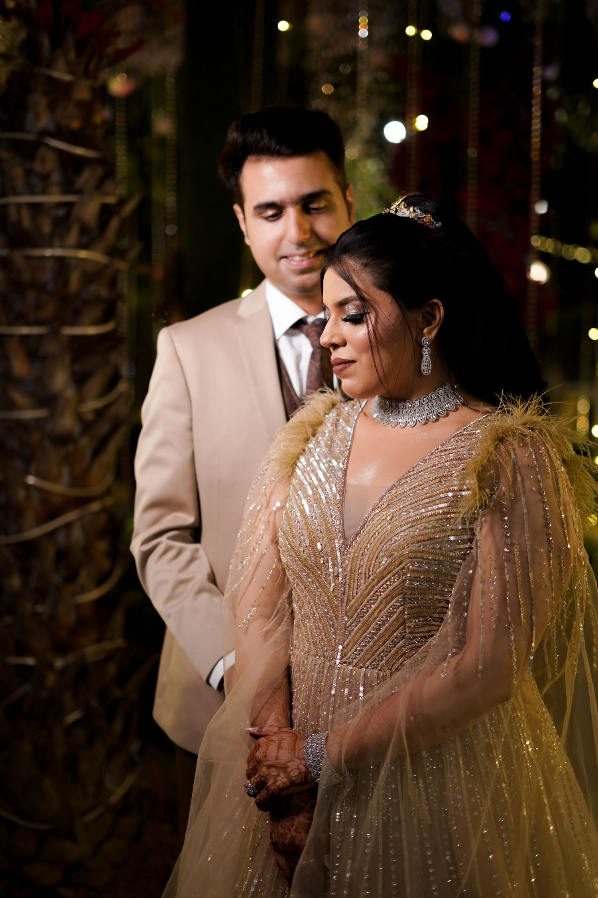

The ceremony
Tradition, held close
Rituals and family moments.
Wedding photography and cinematic films that preserve the feeling of your day, not just the way it looked.
From quiet glances before the ceremony to the joyful blur of the dance floor, we look for the details that make your story unmistakably yours.
View the portfolio ↗
Rituals and family moments.

Honest portraits without the rush.

We work with calm direction and a documentary eye. You get considered portraits when you want them, and space to enjoy the unscripted moments in between.
Thoughtful coverage, from the first save-the-date to the final dance.

A relaxed session built around places, outfits and small rituals that feel like you.
Explore sessions ↗
Family, friends, emotion and fleeting details captured as they unfold.
Explore photography ↗
A moving keepsake shaped by real voices, atmosphere and the energy of your day.
Explore films ↗Demonstration testimonial: replace with a genuine client review before launch.
“They noticed the little things we missed in the moment. Looking through the gallery felt like being there all over again.”

It is the embraces, the happy chaos, the people who made the day yours. We preserve the feeling around the big moments, too.
Tell us a little about your celebration. We’ll help you find the right coverage for it.